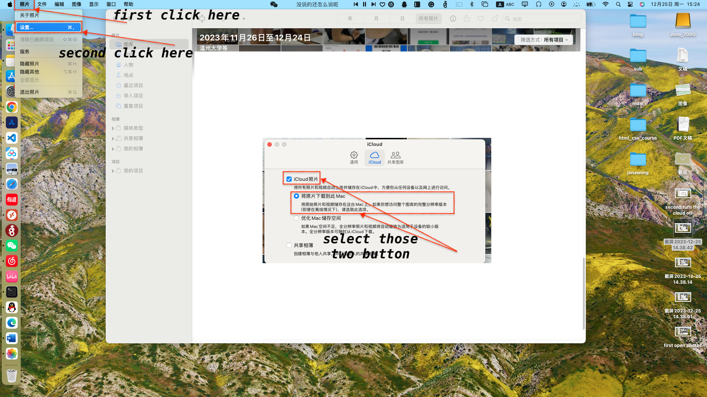
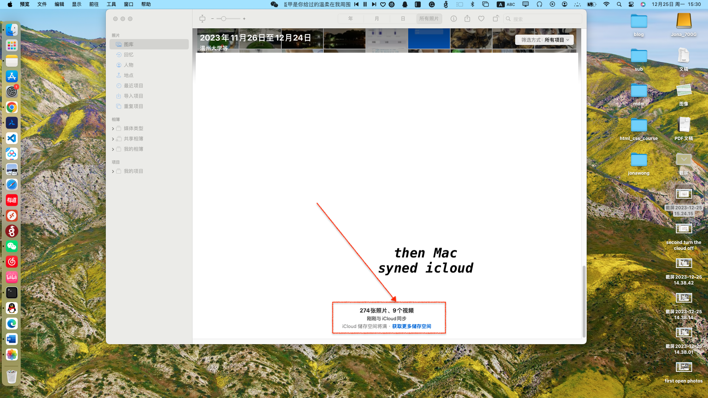
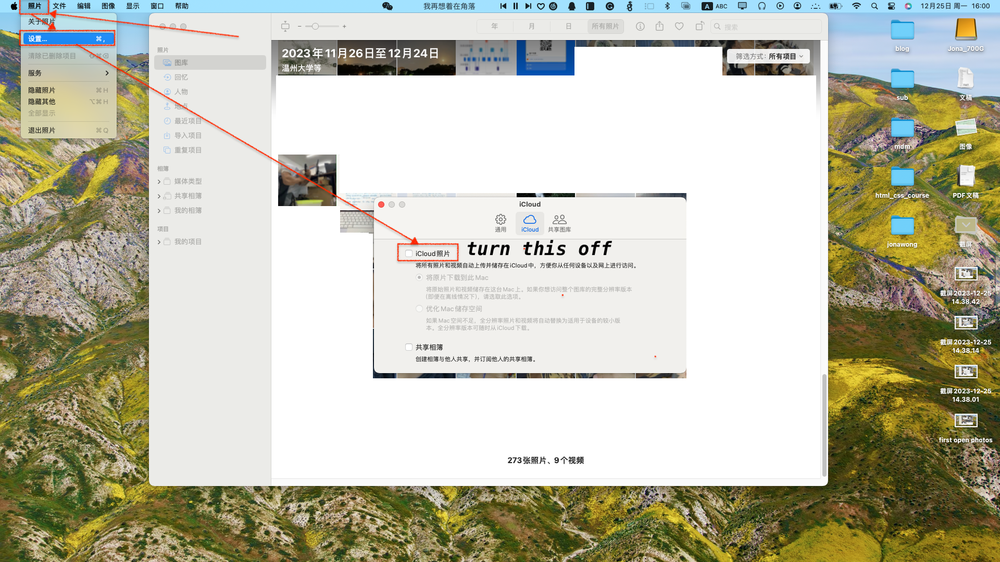

We often encounter storage problems when using an iphone. 64G and 128G are the most used storage devices because to level up the storage is too expensive. And the most storage-occupied app is photos, how can we store our photos to SSD without losing the high quality and more detailed information such as location, album and spot time. Here is what I am gonna tell you how to do it. Follow me step by step and picture by picture.
Before we dive into the specific process, let me simply explain what I am going to and the reasons why we do it. First we take pictures in iphoto and then the iphoto send the photo to the icloud server. Our Mac will syn the photos by downloading the photos from the icloud server, but the default setting may diff, so we should set the settings which I will detailed below. And then the Mac get the raw photos just like you see it in your iphone. We are just upload the photoslibrary file to the SSD which can be opened by Mac which maintains all the details and the structure. Now we delete the uploaded photos in our iphone because we get a copy of the photos and they stay in our SSD (Remember to delete the photos in your iphone photos trash). We spare the icloud space in this way because the deleted photos in your iphone will deleted in icloud. Actually there will be no photos in you icloud server if you successfully finished the above process. Now let us move to the Mac. Open photos in the way which provided below and then creat a new photoslibrary that end up with the photoslibrary extension. And set the new photoslibrary to be the system photoslibrary because only in this way we can syn photos from the icloud and download the original format to our Mac. Now delete the uploaded photoslibrary and if your iphone still have some photos that did not syned to icloud, it will syned to icloud automatically and then the Mac will download the photos from icloud and after it finished you can creat a new photoslibrary and set it system photoslibrary and upload the syned photoslibrary then delete it to spare space for your Mac.
Here is the detailed process demonstrated by pocessing picture in my Mac and iphone.
First of all, we should open photo app and click photo option in the left corner of the screen, settings, icloud photo and download raw photo to this Mac like I showed in Fig.1.
Fig.1. open photos and turn cloud on
Then We will see the Mac is syning photos from cloud and download the raw photos to our Mac.
Fig.2. syn photos and download to Mac
We go to photos setting to turn the icloud off fter the Mac download photos from cloud.
Fig.3. turn cloud off
Then we close the photos app and Open photos in this way: click left button of mouse with the option keyboard pressed. The result showed in Fig.4 after you open photos in this way. The photoslibrary you see its the library which download the photos from cloud.

Fig.4. After click the photos App
Now we create a new photoslibrary showed in Fig.5 and Fig.6. Here my now photoslibrary is called Photos Library 12.photoslibrary. Remember to end by the photoslibrary extension.

Fig.5. create a new photoslibrary
The created new photoslibrary will automatically opened just like Fig.6 and it is empty.

Fig.6. automatically opened new photoslibrary
Since our Mac had syned the photos from cloud just like Fig.2 showed. You can copy the photoslibrary to you SSD. First close photos app and reopen the photos app with option keyboard pressed which showed in Fig.7.

Fig.7. reopen the photos app
Right click the photoslibrary which stored your photos which showed in Fig.8 and click open in finder.
Fig.8. right click photoslibrary and open in finder
Now copy the photoslibrary which stored your photo to SSD which showed in Fig.9. After the copy process finished you can open the photoslibrary from your SSD check that all the detailed information is well stored.

Fig.9. copy photoslibrary to SSD
Now you have your photos stored in your SSD after the above procedures. And now you can delete the photoslibrary to spare space for you Mac and delete the photos in you iphone to spare space for you iphone and your icloud which demonstrated in Fig.10.

Fig.10. delete the photoslibrary and photos
Then You should set the new photoslibrary be system photoslibrary which demonstrated in Fig.10.

Fig.11. set system photoslibrary on Mac
Finally we should turn the cloud photo in our Mac which demonstrated in Fig.12. Once there is new photo shotted by iphone, the Mac will syn it from iCloud.

Fig.12. turn on cloud photos in Mac
Wechat: 15770546370
Email: wj15909447527@gmail.com